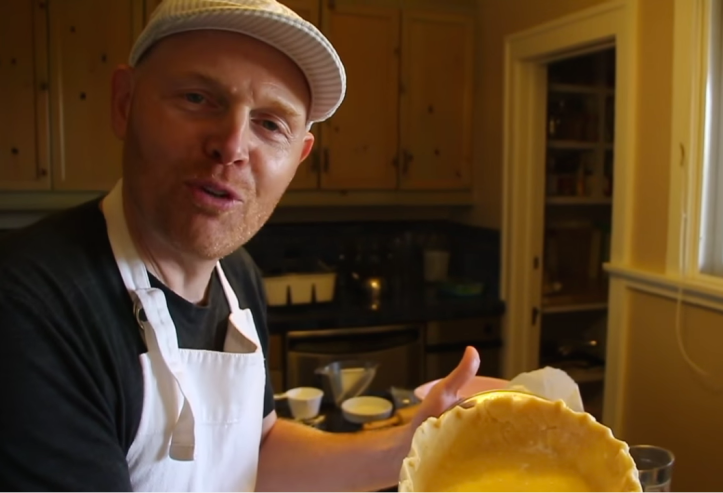

Bill Burr Pie Crust

Description:
"A 5 year old can do this, everyone gets freaked out about baking. Who cares, no one is watching ya... it's not like their filming ya..." - Bill Burr
A basic pie crust suitable to impress your in-laws just enough so they don't lose faith in you as a person altogether.
Ingredients/Required Items:
- 2 C Gold Medal Flour
- Salt
- 8 table spoons of cold butter
- X amount of Crisco
- 4 ounces of water
- A cutting/baking board
- Pastry cloth
- A bowl
- A rolling pin
- Basic flour mixer
- Circular pie plate
Steps:
- Please find the required steps within this Instructional Video!
- Serve and Enjoy!